Part.1 에서는 CentOs 설치 및 하둡 설치와 맵리듀스에 대한 내용이 조금 나오게 됩니다.
그럼, 먼저 CentOs 설치부터 시작하겠습니다.
본 책에는 4개의 CentOs의 설치를 요구하고 있습니다.
· CPU : 듀얼 코어 2.93GHz
· 램 : 2.0GB
· 하드디스크 : 100GB
· 운영체제 : CentOs 6.4(64비트)
현재 CentOs는 Stable Version이 7이므로 저는 CentOs 7(64bit)로 설치하도록 하겠습니다.
4개의 CentOs는 각자의 역할이 있는데,
네임노드(NameNode), 보조네임노드(SecondaryNameNode), 데이터노드
이런 역할을 수행하게 됩니다.
다만, 실습이기 때문에 보조네임노드도 데이터노드로 같이 사용하도록 되있습니다.
앞서 하는 설명은 이제 끝이고 본격적으로 설치 과정을 시작하겠습니다.
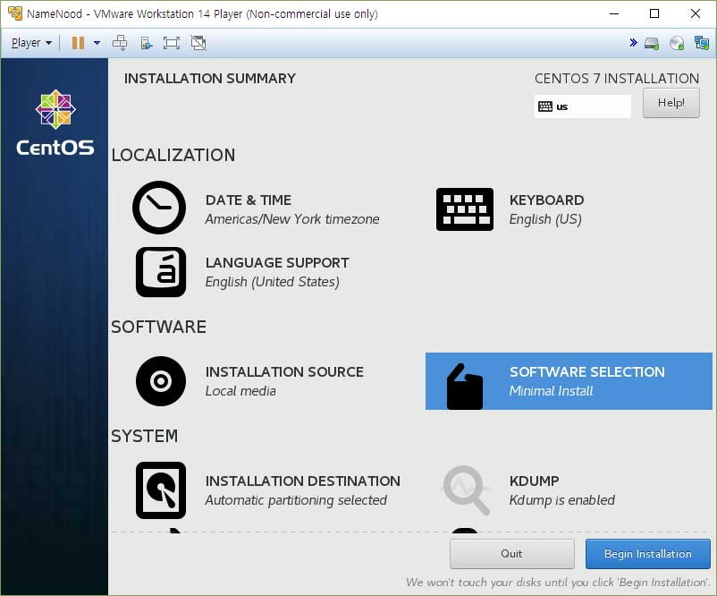
본인은 네임노드에만 GUI를 설치 할 것이기 때문에 4개 전부 최소설치를 하려고 애초에 Minimal ISO를 이용하여 설치를 진행하겠습니다.
그리고 딱히 한국어 쓸 거 아니니까 그냥 en_us로 설치를 진행했습니다.
아, 그리고 여기서 팁을 하나 드리자면 하나 설치하고 거기에 최소한 필요한 것만 설치한 뒤에 해당 가상머신 파일을 복사하여 이름만 바꾸고,
usermod 명령어를 이용해 이름만 바꾸면 됩니다. 참 쉽죠?
최소설치이기 때문에 뭐 이런 기본적인건 있겠지? 싶은게 하나도 없습니다.
일단 설치가 끝나면 root 계정으로 접속 한 뒤에 다음 명령어들을 입력합니다.
yum update
yum upgrade
만약 귀찮으니 한번에 다 하고싶다 하시면 yum update && yum upgrade 하시면 됩니다.
그리고 SSH를 사용해야 하니 openssh를 설치합니다.
yum install -y openssh*
그럼 SSH가 설치됐습니다.
서버 인코딩 방식이 UTF-8인지도 확인해야 합니다. 내가 한글을 쓸건 아니지만 수집한 자료중에 한글이 있다면 깨져서 나오게 될거거든요.
echo $LANG 을 입력합니다.
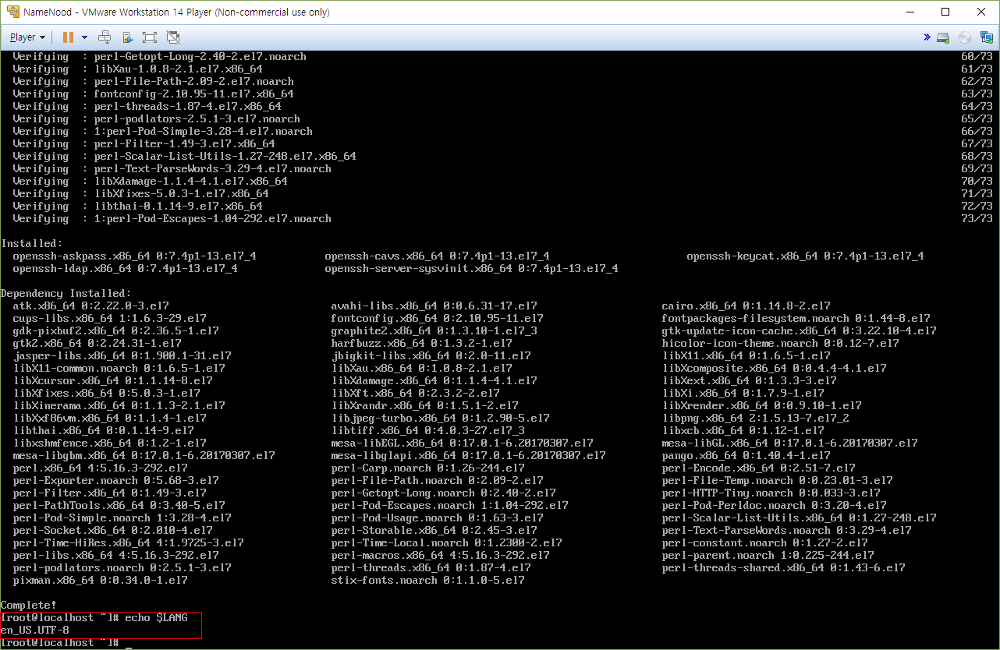
기본설정이 UTF-8로 되어있으니 넘어가도록 하겠습니다.
다음은 하둡을 이용하기 위해 먼저 자바를 설치해야 하는데요, 홈페이지까지 들어가서 자바를 다운받아오기 귀찮으니깐
yum 패키지 매니저를 이용하여 jdk를 설치하겠습니다.
yum list java*jdk-devel
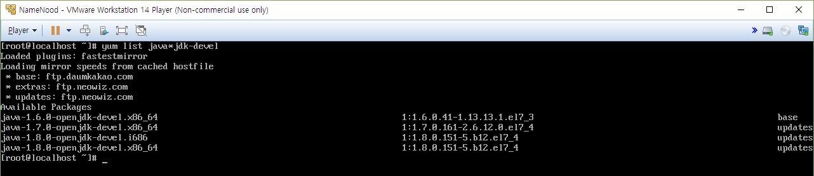
위에서 보시듯이 설치가능한 패키지 리스트를 보는 것입니다.
저는 맨 밑에 있는 1.8.0 버전을 설치하겠습니다.
아, 여기서 조심해야할게 64비트 운영체제로 설치했으므로 i686을 설치해선 안됩니다!
yum install -y java-1.8.0-openjdk-devel.x86_64
애초에 en_us로 설치해서 yum repository의 mirror 서버가 미국쪽으로 되어있다보니 설치가 오래걸렸습니다.
바꿀까 생각하다가 가끔 느린건데 뭐... 귀찮.... 하며 그냥 넘어갔습니다...
설치가 다 되면 javac -version 을 입력하여 설치가 잘 되었는가 확인합니다.
그 뒤엔 which javac 를 입력하여 설치경로를 봅니다.
/bin/javac 라고 나옵니다. 그러나 이건 정확한 경로가 아닙니다.
readlink -f /bin/javac 라고 입력하면 정확한 경로를 얻을 수 있습니다.
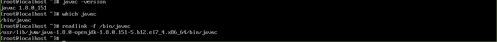
/usr/lib/jvm/java-1.8.0-openjdk-1.8.0.151-5.b12.el7_4.x86_64/bin/javac
이게 정확한 경로입니다.
/usr/lib/jvm/java-1.8.0-openjdk-1.8.0.151-5.b12.el7_4.x86_64 딱 여기까지가 경로입니다.
그럼 환경변수를 설정해야 합니다.vi /etc/profile
맨 하단에export JAVA_HOME=/usr/lib/jvm/java-1.8.0-openjdk-1.8.0.151-5.b12.el7_4.x86_64
export PATH=$PATH:$JAVA_HOME/bin
export CLASS_PATH="."
을 추가해줍니다.
그 후에 source /etc/profile 을 입력하여 수정사항을 적용시키고,
echo $JAVA_HOME 을 입력하여 저 경로가 정확히 나오는지 확인합니다.
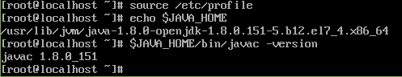
좀 더 정확히 확인하기 위해서 $JAVA_HOME/bin/javac -version 을 입력합니다.
위의 사진처럼 출력되면 환경변수가 잘 설정된겁니다.
필요한 준비는 다 마쳤으니 이제 하둡을 설치하면 됩니다.
저는 애초에 하둡2 버전을 설치하려고 했으나, 책 후반부에 하둡2 버전에 대한 안내가 나와서,
책에 나오는대로 하둡1 버전을 설치하도록 하겠습니다.
CentOs를 최소설치 했으므로 wget이 없습니다....
yum install -y wget
을 입력하여 wget을 설치합니다.설치가 다 되면 wget명령어를 통해 하둡을 다운로드 받습니다.
wget "http://www.eu.apache.org/dist/hadoop/common/hadoop-1.2.1/hadoop-1.2.1.tar.gz"
ls 명령어로 확인해보면 다운로드가 됐음을 확인할 수 있습니다.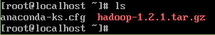
tar.gz는 압축파일 입니다. 압축을 풀어야겠죠?
tar xvfz hadoop-1.2.1.tar.gz
다시 ls 명령어를 통해 확인해보면 압축이 풀린 것을 확인할 수 있습니다.이제 압축파일은 필요없죠? 삭제해버립니다.
rm hadoop-1.2.1.tar.gz
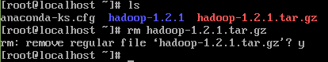
이로써 하둡 설치가 완료되었습니다(?)
엥? 압축만 풀었는데 완료라니? 하실수도 있지만 리눅스는 종종 그런 패키지들이 존재합니다.
yum을 통해 java를 설치했지만,
사실 원래 설치방법은 오라클 홈페이지에 들어가 JAVA SE의 최신버전이 압축된
tar.gz파일을 다운받은 뒤에 올바른 경로에 압축을 풀면 java의 설치가 완료되는 식입니다.
그래서 그냥 압축을 풀기만 했는데도 설치를 완료했다!(?) 라고 하는겁니다.
책을 보면 꿀팁이 하나 있는데, cd $HADOOP_HOME 라고 입력하면 어느 경로에서든지 하둡의 폴더로 이동하는 방법에 대해 나와있습니다.
제 기준에서 써보자면,
vi /home/NameNood/.bash_profile
을 입력하여HADOOP_HOME=/home/NameNood/hadoop-1.2.1
을 맨 아랫줄에 추가vi ./hadoop-1.2.1/conf/hadoop-env.sh
export HADOOP_HOME_WARN_SUPPRESS="TRUE"
를 맨 아랫줄에 추가 하면 됩니다.그런데, 이까지 하다가 저는 문득 중요한걸 꺠달았습니다.
루트 계정으로 실행했다는겁니다. pwd 명령어로 현재 위치를 조회하면 /root 라고 나옵니다. 아차!
그러니 mv hadoop-1.2.1 /home/NameNood/ 명령어를 통해 저 위치로 옮깁니다.
그리고 하둡 폴더의 주인이 루트계정으로 되어있으니 그것도 사용자 계정으로 돌려야 합니다.
chown -R NameNode:NameNode hadoop-1.2.1
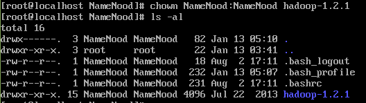
이렇게 사용자 계정으로 소유권이 잘 넘어갔습니다.
여기서 꿀팁 하나 드리자면, 제가 리눅스로 여러번 삽질 해본 경험담인데, 여기서 유저 계정으로 들어가서 sudo 명령을 넣게되면
뭔가 에러를 토해내며 sudoers 에 어쩌고 저쩌고 하며 sudo명령어가 듣지 않습니다.
그래서 해결책은! visudo 입니다.
루트계정으로 visudo 라고 입력하면
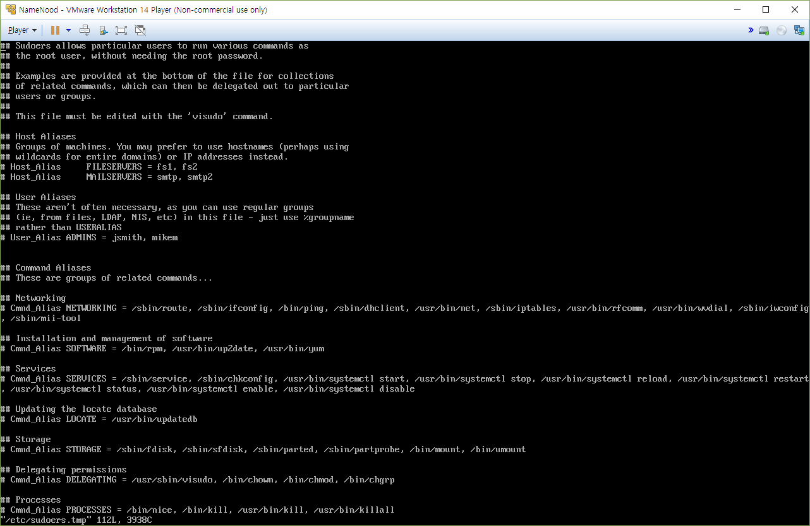
이런 창이 하나 뜰겁니다.
저기서 맨 아래로 쭈욱 내리면
root ALL=(ALL) ALL
이라는 부분이 보이실겁니다.
그럼 그 아래에 root 대신 나의 계정명을 쓰고 나머지는 똑같이 써주면 됩니다.
여기서 좀 더 꿀팁 하나 드리자면, 맨 뒤에 ALL 부분을 NOPASSWD=ALL 하고 바꿔주면
sudo 명령어를 사용할 때 패스워드를 입력하지 않아도 되는 편리한 점이 생깁니다.
일단 편하긴 한데, 실무에 적용하실거라면 보안상 하지 않는걸 추천드립니다.
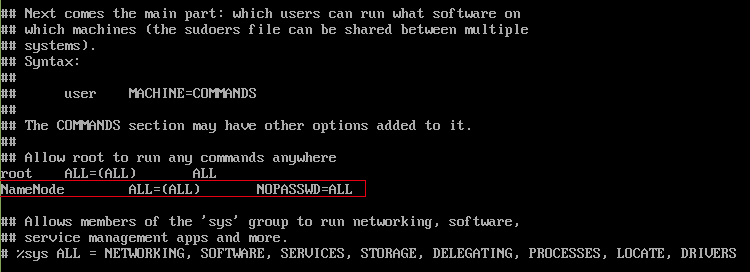
저는 이렇게 했습니다.
근데, 에러가 나서 NOPASSWD 부분을 지워야만 했습니다.
저번까진 잘 했는데 왜 그러는지 모르겠습니다.
아무튼 이제 sudo 명령어 에러는 안날겁니다.
...이까지 하다가 NameNood 라고 쓰고있다는 사실을 깨달았다. NameNode인데.... 쪽팔린다.
이름이랑 그룹을 바꿔주는 작업을 해야겠다.
usermod -l NameNode NameNood
usermod -m -d /home/NameNode NameNode
groupmod -n NameNode NameNood
근데 어차피 나중에 데이터노드를 복사하고 나면 이 작업들을 해야 하므로 미리 알려드린격 입니다.(?)
그리고 '최소설치' 를 했기 때문에 나머지 필요한 것들을 설치하고 복사하도록 합시다.
yum install -y setuptool
yum install -y ntsysv
yum install -y net-tools
yum install -y ipvsadm
yum install -y mc

됐다, 이제 가상머신을 복사할 시간입니다.
init 0 을 입력하여 종료합니다.(설마 모를려고...)
다 복사하고 나니 문제가 생겼습니다.
ssh 포트도 열려있지 않고... 뭐 이것저것.... 최소설치라 손댈 부분이 많습니다.
systemctl restart network
vi /etc/ssh/sshd_config
#Port 22 부분의 주석을 지웁니다.
systemctl start sshd.service
firewall-cmd --zone=public --add-port=22/tcp --permanent
firewall-cmd --reload
SSH의 공개키가 없기 때문에(...) ssh-keygen 명령어로 공개키를 만들어야 하는 것입니다.
이쯤 삽질을 하다보니 여러모로 귀찮은 일들이 또 생겼습니다.
고정 ip설정도 해야하고 뭐...
귀찮아서 유저 이름은 그냥 hadoop으로 통일해버리고 host 이름만 바꾸기로 했습니다.
아래는 고정ip를 만드는 방법입니다.
ifconfig 를 입력하면 ip정보가 나옵니다.
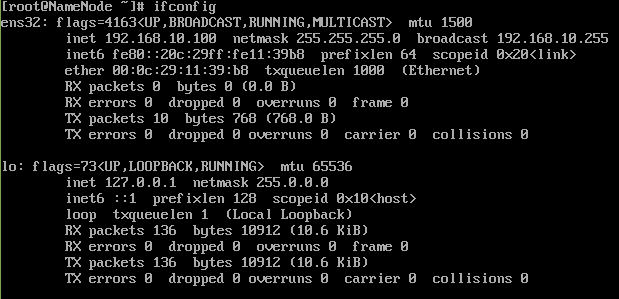
보통은 eth0 일텐데 저는 ens32죠? 아무튼 저걸 기억하고 있어야 합니다.
그리고 cd /etc/sysconfig/network-scripts 명령어로 해당 폴더로 이동합니다.
ls 명령어로 리스트를 보면 아까 그 이름이 보일겁니다.
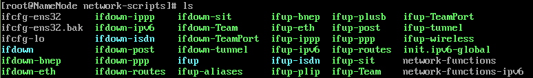
발견했으면, vi ifcfg-ens32 를 입력합니다.
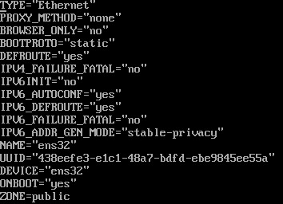
이렇게 나올텐데, 저는 이미 수정한 후이고, 수정 전에는
BOOTPROTO의 값이 다른 값으로 되어있었습니다. 그걸 static 으로 고쳐야 고정IP가 됩니다.
그리고 IPV6INIT 값도 no 로 수정했습니다.
그리고 나서 나머지 IP 정보들을 입력해야 합니다.
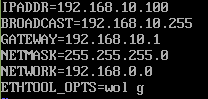
위의 그림과 같이 입력하는데, IPADDR에는 내가 쓰고싶은 고정IP를 입력하시고,
뭐... 나머지는 좋으실대로....(귀찮...)
그리고 마지막으로 호스트 정보를 입력합니다.
네임노드의 IP 마지막 부분을 100으로 했으니 그 다음은 101, 102 이런식으로 할겁니다.
그래서, vi /etc/hosts 를 입력해서
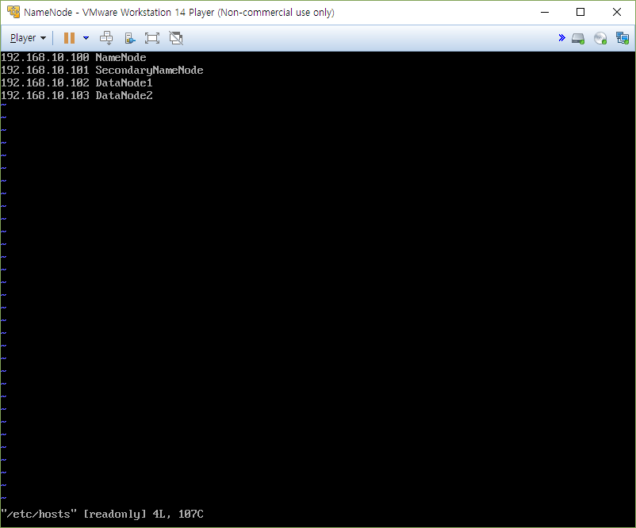
이렇게 수정합니다.
여기까지 했으니 이제 진짜로 복사를 시작합니다.
공통적으로 필요한것만 다 해놨으니 복사하고 호스트 네임이랑 IP만 바꾸면 끝이에요!(아니, 끝은 아닌데...)
복사 후에는 호스트 네임을 바꾸고 고정IP를 입력하는 과정을 거칠텐데 일단 위에 서술해놨으니...
그 과정에 대한 스크린샷은 스킵하도록 하겠습니다 ㅋㅋㅋㅋㅋㅋㅋㅋㅋ
어차피 위에 어떻게 하는지 다 써놨잖아요?
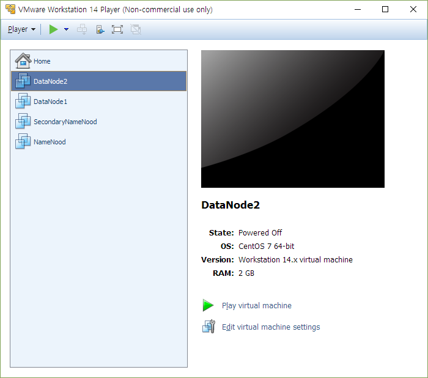
자, 다 복사했습니다.